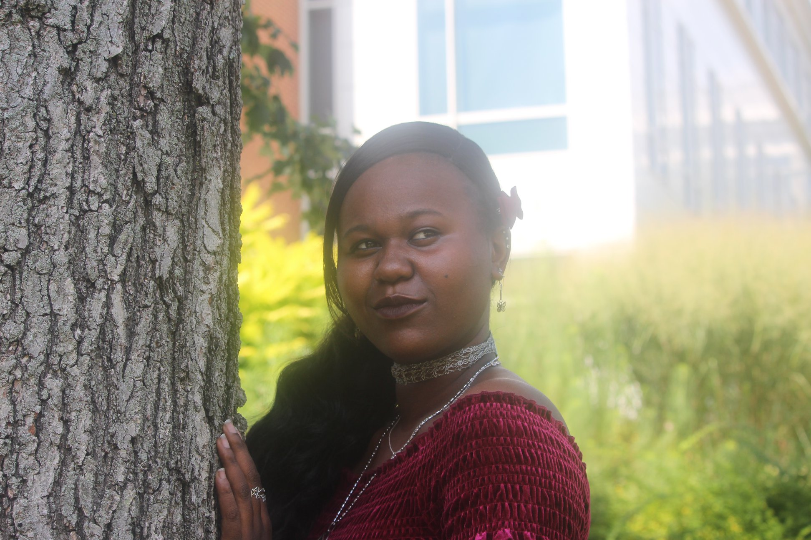

University of Maryland, founded in 1856, is the state's flagship campus, but students are unhappy with the lack of diversity within the faculty population. (Megan Sayles/ Journalism 352)
When Alexandra Glover attended Paint Branch High School in Montgomery County, she and many of her fellow classmates were people of color. Even with the diverse student body, Glover’s teachers were primarily white, despite the school having many teachers of color, according to Glover.
Now, after three years at the University of Maryland, Glover has had few teachers who share her race, and the ones she has had teach African American studies or other diversity and cultural classes.
“Unfortunately the way the education program is, [students] are used to white teachers,” Glover said. “This is just the way it is.” For Glover, every race except white is underrepresented in the university’s faculty, and its data on demographics proves that.
According to a 2019 Campus Counts assessment, UMD’s faculty comprised 274 African Americans, 533 Asian Americans and 210 Latin Americans in 2019, while there were 2,633 white faculty members. Overall, the minority population of faculty is 43.7% compared to 43.6% for the student population, but there are disparities between races. The assessments found that while 11.5% of students are Black or African American, only 5.9% of faculty is. Similarly, 9.3% of students are Hispanic and only 4.5% of faculty is.
UMD's strategic plan for diversity, published in 2012, highlights the importance of students being exposed to different perspectives and interacting with people from different races, but the flagship struggles with recruiting minority faculty. Although the yearly Campus Counts assessments illustrate that minority faculty numbers are increasing, the diversity of the student body is underrepresented in the faculty population.
For those faculty that are of color, there has been some dissatisfaction during their time at the university. In UMD’s most recent Faculty Work Environment Survey, it was found that almost 58% of surveyed faculty of color “believe they have to work harder than some of their colleagues to be perceived as a legitimate scholar.” Faculty of color were also less likely to agree that their department makes “genuine efforts to recruit female faculty and faculty of color,” according to the 2015 survey. Most importantly, surveyed faculty of color were less satisfied than white faculty with the diversity on UMD’s campus.
While Glover thinks the university should prioritize having a diverse faculty, she does not think it will make the effort to do so because “they want to promote the message without actually having to do the work.” For her, the university uses diversity and inclusion as a selling point to potential students and their families.
She finds that having faculty from minority groups helps to make her feel more comfortable in the classroom. “When you see someone like you in a position of power, you are able to relate to that,” Glover said. “It’s nice to learn from someone who you normally don’t see at the front of the classroom.”
Alexandra Glover is a junior at the university. She has only had three professors that share her race while studying at UMD. (Megan Sayles/Journalism 352)
With the appointment of Darryll J. Pines as the new university president, Glover hopes to see improvements in faculty diversity. Pines, a minority himself, is currently the dean of the university’s School of Engineering, and while holding this position, he has worked closely with diversity.
“Under Dr. Pines’ leadership, the number of tenured and tenure-track women faculty in the Clark School has more than doubled, and the number of underrepresented minority faculty has grown as well,” according to an announcement from the University System of Maryland’s office of the chancellor. Because young people spend most of their time in the education system, Glover thinks the faculty environment becomes a reflection of the world for them.
“When you are used to mostly white teachers, that sets you up for when you are an adult because you are not used to seeing people of color in positions of power,” Glover said.